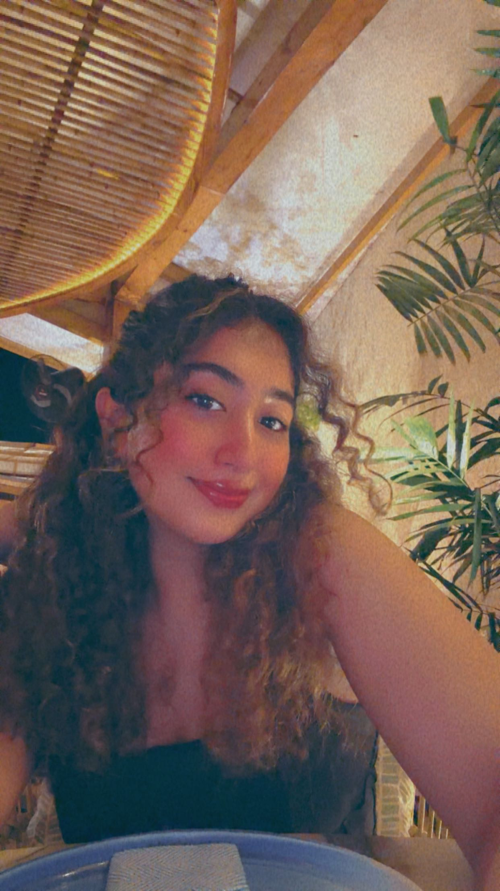

Hi, I’m Neeral
Hi! I’m a student at the University of San Francisco, currently studying Business Analytics with a minor in UX/UI design. I’ve always been interested in how data and design come together to create meaningful digital experiences.
This brunch blog started as a simple project but quickly became something I genuinely enjoy working on. Exploring cafés around San Francisco, especially near USF, has become one of my favorite ways to unwind and discover new spots.
I love cozy cafés, aesthetic interiors, and good food, and this site is my way of sharing those finds with other students looking for the perfect brunch spot.
When I’m not working on projects, you’ll probably find me trying new cafés, working on design ideas, or just enjoying a slow morning with coffee.
